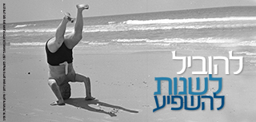

נפתחה ההרשמה למחזור כ"ח בבית ספר מנדל למנהיגות חינוכית 🔗
2018-09-09
מתוך חדשות קרן מנדל ישראל
2018-09-09
2023-07-30

2023-07-16

2023-06-21

2023-06-08

2023-05-03

2023-04-19

2023-02-26
2023-02-15

2023-01-30
2023-01-16

2023-01-16

2022-12-29
2022-12-19

2022-12-13
2022-12-01

2022-11-29

2022-11-18

2022-11-17

2022-11-14
2022-11-10

2022-11-08

2022-09-08

2022-08-21

2022-08-09

2022-07-28

2022-06-28

2022-06-15

2022-04-30

2022-04-28
2022-04-26

2022-04-04

2022-04-04

2022-03-29

2022-03-28

2022-02-13

2022-02-08
2022-01-17

2022-01-17
2022-01-05
2022-01-03

2021-12-15

2021-12-01

2021-11-24
2021-11-15

2021-11-09

2021-10-17

2021-08-08

2021-08-01

2021-07-28

2021-04-29

2021-04-26

2021-04-26

2021-04-26

2021-04-16

2021-04-11
2021-03-18

2021-02-24

2021-02-14
2021-01-17

2020-12-22

2020-12-21

2020-12-08

2020-12-07

2020-12-06
2017-02-02
2020-11-08

2020-11-02

2020-10-21

2020-09-08
2020-09-07
2020-09-06
2020-09-04
2020-08-09

2020-07-22
2020-06-07

2020-05-26

2020-05-14

2020-04-27
2020-04-17

2020-04-07

2020-04-05

2020-04-01

2020-03-31

2020-02-02
2020-01-12
2020-01-09
2020-01-05

2019-12-02
2019-12-01

2019-11-24

2019-11-08
2019-10-25
2019-10-23

2019-10-20

2019-10-17

2019-09-26

2019-09-23
2019-09-19

2019-09-16

2019-06-16

2019-05-25
2019-03-07

2019-02-14

2019-02-07

2019-01-21

2019-01-20
2018-12-23
2017-05-15

2018-11-01

2018-10-29

2018-10-29
2018-10-29
2018-10-16
2018-06-19

2018-06-08
2018-04-29
2018-04-11

2018-03-12

2017-03-14

2018-01-30

2017-10-31

2017-10-30
2017-10-30

2017-10-17

2017-09-25

2017-09-05

2017-07-03

2017-07-03

2017-06-15

2017-05-08
2017-04-18

2017-03-26
2017-02-20
2017-02-08

2017-02-02

2017-01-31

2016-11-02
2016-10-30
2016-09-05

2016-08-15
2016-07-13
2016-07-10

2016-07-10

2016-07-01

2016-06-30

2016-06-01

2016-05-30
2016-05-25

2016-05-25

2016-05-25

2016-05-01

2016-04-07

2016-03-21

2016-03-16
2016-03-01

2015-06-02

2015-01-06

2015-01-05

2014-12-10